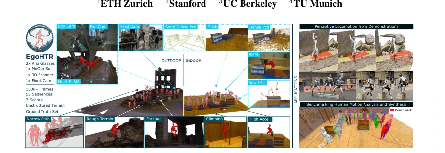
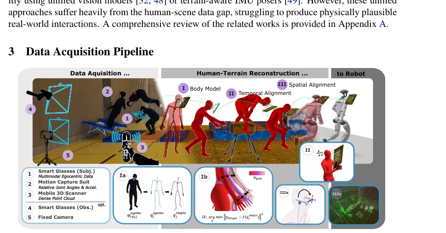
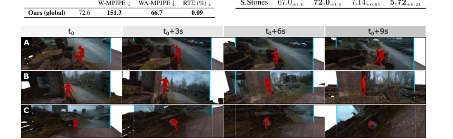
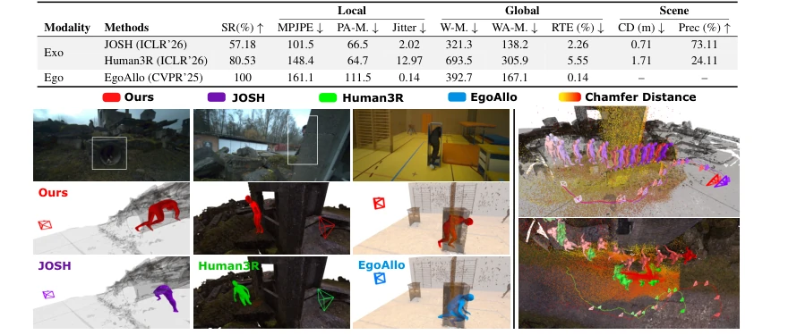

This paper finally transfers human action data from the laboratory to the field, and the EgoHTR dataset indeed addresses the pain point of "rough terrain". However, the authors' touted "centimeter-level accuracy" holds up in static scenarios but fails once dynamic objects are encountered (as admitted in the Limitations section regarding the absence of articulated objects). Although the deployment on Unitree G1 appears impressive, the 0.05-meter noise tolerance suggests that data quality allows for no margin for error. Overall, this is a solid benchmark, but do not expect it to directly train general-purpose robots, as "field" does not equate to "all situations in the real world", and the static environment assumption limits its application in dynamic scenarios.
Walking on unstructured terrain remains a challenge for humanoid robots. Existing datasets such as AMASS [15] lack scene context, while HPS [29] and SLOPER4D [30] are mostly limited to indoor or flat terrain. Vision-based 4D reconstruction methods [12] are prone to failure in occlusion and dynamic motion, and lack contact accuracy. This causes imitation learning strategies to struggle to generalize in complex terrain, failing to provide the high-precision reference required for foothold-critical tasks. Therefore, an open capture pipeline that balances scalability with reconstruction accuracy is needed to support context-aware robot motion learning.
方法Method
核心是“多传感器融合 + 三阶段重建”。硬件包括 Aria 眼镜、MoCap 服和 3D 扫描仪。Pipeline 分三步：(I) 身体建模，用 SMPL-X 参数化，通过旋转重定向和 IK 优化将 MoCap 数据映射到人体模型；(II) 时间对齐，利用拍手声信号同步传感器流，避免硬线同步；(III) 空间对齐，先用 Aria SLAM 消除 IMU 漂移，再用 ICP 将人体轨迹与 3D 扫描场景配准。此外，通过固定相机和观察者眼镜提供多视角数据，增强了重建的鲁棒性。这种设计既保证了全局定位精度，又保留了野外采集的灵活性，支持社区扩展。
The core is "multi-sensor fusion + three-stage reconstruction". Hardware includes Aria glasses, a MoCap suit, and a 3D scanner. The pipeline is divided into three steps: (I) Body modeling, parameterized using SMPL-X, mapping MoCap data to the human model via rotation retargeting and IK optimization; (II) Temporal alignment, utilizing clap sound signals to synchronize sensor streams, avoiding hardwire synchronization; (III) Spatial alignment, first using Aria SLAM to eliminate IMU drift, then using ICP to register the human trajectory with the 3D scanned scene. Additionally, multi-view data provided by fixed cameras and observer glasses enhances the robustness of the reconstruction. This design ensures global localization accuracy while retaining the flexibility of field collection and supports community extension.
The dataset contains 55 sequences and 150,000 frames, covering 7 scenes. Quantitative evaluation shows an MPJPE of 73.2mm, outperforming SLOPER4D. A perception-motion strategy was deployed on the Unitree G1, verifying data usability. Ablation studies indicate that introducing foot contact rewards can significantly improve success rates in sparse terrain. The key finding is that reference motion accuracy must be controlled within 0.05 meters; beyond 0.1 meters, the strategy fails. This proves the necessity of high-precision reconstruction for legged robots and also reveals the shortcomings of current monocular methods regarding global drift.
其他图片Other Figures

Figure 1: EgoHTR dataset preview, a set of in-the-wild 4D human-scene demonstrations focused on rough terrain. Left: Example outdoor (debris field) and indoor (gym hall) scene, highlighting the reconstructed 4D human-scene sequences with its provided modalities (light blue; ego- and exocentric Aria video and SLAM streams, 3D mesh and point cloud, parametrized model, raw IMU) and the diversity of human motions (dark blue). Right: Downstream applications verifying the utility of the dataset, including the successful deployment of perceptive locomotion policies.

Figure 2: Overview of the implemented dataset generation pipeline. We categorize the methodology into two stages: data acquisition and human-terrain reconstruction – enabling human2robot retargeting (Appendix B.4). A capture system with 3 core sensors (Aria glasses, MoCap suit, 3D Scanner) provide data for a three stage human-scene reconstruction: (I) body model parametrization, (II) temporal and (III) spatial alignment.

Figure 3: The image streams show the aligned 3D environment (background) with the estimated 3D human mesh (red) overlaid with the projected observer image (blue border) of versatile motions: walking through a debris field (A), balancing over a narrow beam (B), and crawling into a pipe (C).

Figure 6: Failure cases of SOTA human mesh recovery methods under challenging environmental conditions present in our dataset. Left: Observer Aria image frames (top). Our EgoHTR reconstructions (middle). Failure cases of SOTA methods induced by complex scene interactions (bottom). Right: Visualizing the global motion estimates, together with color-encoded chamfer distance of the reconstructed scene point cloud.